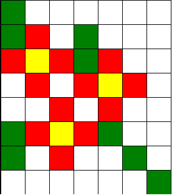

"Todo jardim começa com um sonho de amor.
Antes que qualquer árvore seja plantada ou qualquer lago seja construído,
é preciso que as árvores e os lagos tenham nascido dentro da alma.
Quem não tem jardins por dentro,
não planta jardins por fora
e nem passeia por eles.."
Rubem Alves